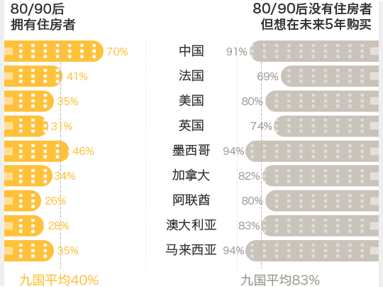
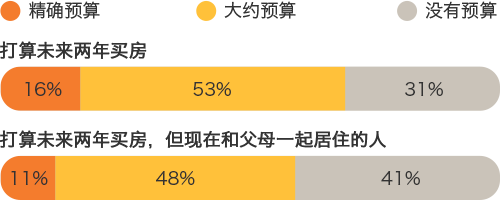
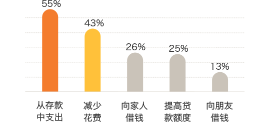
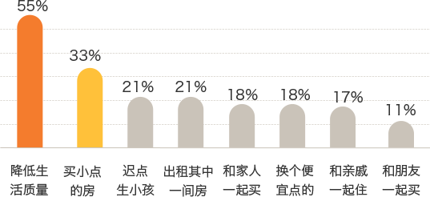
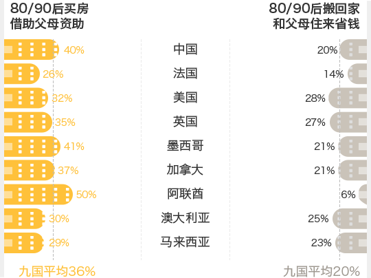

英国的汇丰银行做了一个调查
关于年轻人买房的
不只在中国，还有其他八个国家
这里的年轻人指的是80／90后
他们还有个响亮的名字，叫：
调查结果显示:
自己名下有房
然而不同国家的差异可就大了
你猜你猜!
1. 你猜猜中国的80/90后自己有房的比例是？
2. 80/90后自己有房比例最高的是？
法国
美国
马来西亚
中国
3. 你猜猜美国年轻人有房的比例是？
4. 九个国家的80/90后无房户，谁最迫切在未来五年买上房？
法国
美国
马来西亚
中国
各国年轻人拥有住房比例

买房压力大，在哪都一样
九国年轻人中有69%承认
买不起房面临的主要问题？
买房不能空想
总得有个计划吧
然而无房的千禧一代中
打算未来两年买房
但没计划的竟然有31%
大致有个计划的占一半
有精确预算计划的仅有16%
总得有个计划吧
然而无房的千禧一代中
打算未来两年买房
但没计划的竟然有31%
大致有个计划的占一半
有精确预算计划的仅有16%
那些仍和父母住一起的年轻人
就更没计划了
就更没计划了
未来两年打算买房做预算了？

计划归计划
到真买的时候还会有差距（尤其是在中国）
56%的在调查前两年内买房的年轻人表示
到真买的时候还会有差距（尤其是在中国）
56%的在调查前两年内买房的年轻人表示
这一比例在阿联酋达到70%
买房超预算，又该怎么办？

实在买不起房
但又很想拥有自己的房子
那么做些妥协好吗
首先你可能需要放弃咖啡和牛油果
或者先买个小点的房
或者晚几年再要孩子
如果必须放弃什么来存钱...

这些都做了，难度还是很大
那样事情会不会不一样了
九国的有房子的80/90后中
平均有36%是来自父母的资助
九国的有房子的80/90后中
平均有36%是来自父母的资助
你猜你猜!
1. 你猜中国80/90后买房借助父母资助的比例大约有？
2. 80/90后为了省钱搬回父母家住的比例最高的国家，你猜是？
中国
美国
马来西亚
法国

居然是美国
所以美剧里
18岁以后就仗剑走天涯
的那些桥段是怎么回事
我们一定是看了假美剧
所以美剧里
18岁以后就仗剑走天涯
的那些桥段是怎么回事
我们一定是看了假美剧